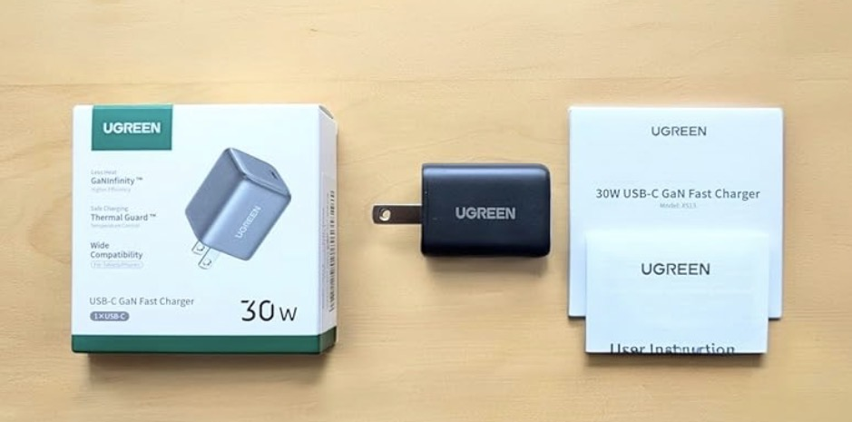

UGREEN PD充電器 30W 2ポートUSB-C＋USB-Aを実際に使って分かった魅力と注意点
UGREEN PD充電器 type-c 30W 2*USB-C+1*USB-A GaN PSE適合/PD3.0を、実際の口コミと使用感をもとに「複数デバイスをまとめて充電したい人」に向けて詳しくレビューします。

コンパクトなのに3ポート搭載、デスク周りが一気にスッキリ
このUGREEN PD充電器の一番の魅力は、USB-C×2とUSB-A×1の合計3ポートを、手のひらサイズのコンパクトなボディに収めていることです。スマホ、ワイヤレスイヤホン、タブレットなど、日常的に充電したい機器が増えている中で、コンセントを3つも4つも占領せずに1台でまとめられるのはかなり快適です。
口コミでも「スマホやイヤホンなど複数デバイスをまとめて充電したくて購入」「サイズもコンパクトで持ち運びしやすい」と評価されており、旅行や出張、カフェでの作業など、外出先での“充電拠点”としても使いやすい印象です。バッグのポケットに入れてもかさばりにくく、ケーブルさえ用意しておけば、どこでも自分専用の充電ステーションを作れます。
さらに、GaN（窒化ガリウム）採用により、従来のシリコンベースの充電器と比べて発熱を抑えつつ高出力を実現している点も安心材料です。PSE適合で日本国内の安全基準を満たしているため、日常使いのメイン充電器としても選びやすいでしょう。
単ポート使用時は30W急速充電、スマホ充電がストレスフリー
単ポート使用時には最大30WのPD急速充電に対応しており、対応スマホであれば従来の5V/2Aクラスの充電器と比べて体感できるレベルで充電時間が短くなります。朝の支度中に少し充電するだけでも、バッテリー残量がぐっと回復しているので「充電し忘れた！」という焦りが減ります。
口コミでも「単ポート使用時は30Wの急速充電に対応しており、スマホの充電速度も十分速く、日常使いではストレスなく使えます」とあり、メインスマホ用の充電器としての性能は十分と言えます。PD3.0対応により、対応機種との組み合わせでは最適な電力を自動で供給してくれるため、過剰な負荷を心配せずに使えるのもポイントです。
UGREEN PD充電器 30Wの詳細をAmazonで確認するなお、本記事内のリンクはAmazonアソシエイトなどのアフィリエイトリンクを含む場合があります。リンクのクリックや商品購入により、筆者が紹介料を受け取ることがありますが、読者の皆さまの負担する金額が変わることはありません。
複数ポート同時使用時は出力分配に注意【ノートPC併用時のポイント】
一方で、3ポート同時に使用する場合は出力が分配されるため、充電速度がやや落ちる点には注意が必要です。口コミでも「複数ポートを同時に使用すると出力が分配されるため、充電速度はやや落ちます」「ノートPCなど高出力を求める機器と併用する場合は注意が必要」と書かれており、これは仕様上避けられないポイントです。
例えば、USB-CポートでノートPCを充電しながら、もう一方のUSB-Cでスマホ、USB-Aでイヤホンを充電すると、ノートPC側の充電速度が落ちることがあります。バッテリー残量が少ない状態で急いで充電したい場合は、ノートPCだけを単ポートで接続する、もしくはスマホやイヤホンの充電を一時的に止めるなど、使い方を工夫するとストレスが減ります。
逆に、スマホ＋イヤホン＋モバイルバッテリーなど、比較的低出力で済む機器をまとめて充電する用途であれば、出力分配の影響はそこまで気になりません。「寝ている間に全部まとめて充電しておきたい」「デスク上のケーブルを減らしたい」といったニーズには、3ポート構成の利便性が大きく勝ります。
デスク周りをスッキリさせたい人に特におすすめ
同価格帯の単ポート充電器と比べると、UGREEN PD充電器は「1台で複数機器を扱える利便性」が大きな強みです。コンセントタップに充電器がいくつも刺さっている状態から、この充電器1つにまとめるだけで、見た目のゴチャつきがかなり減ります。ケーブルの本数を整理しやすくなるので、掃除もしやすく、デスク周りのストレスが減るのも地味にうれしいポイントです。
また、ブラックカラーの落ち着いたデザインは、PCデスクやベッドサイド、リビングのコンセント周りにも馴染みやすく、「いかにもガジェット」という主張が強すぎないのも好印象です。仕事用デスクと寝室の両方に1台ずつ置いておくと、どこでも同じ感覚で充電環境を整えられます。
総合的に見ると、「複数デバイスを効率よく充電したい人」にとって非常に使いやすい製品であり、用途を理解して使えば満足度は高いと感じます。特に、スマホ・イヤホン・タブレットを日常的に持ち歩く人や、家族で充電器を共有したい家庭には、1台あると“充電のストレス”がかなり軽減されるはずです。
UGREEN PD充電器 30Wはこんな人に向いている
- スマホやイヤホン、タブレットなど複数デバイスをまとめて充電したい人
- 旅行や出張用に、コンパクトで持ち運びやすい充電器を探している人
- デスク周りのコンセント・ケーブルをスッキリさせたい人
- GaN採用・PSE適合など、安全性にも配慮された充電器を選びたい人
逆に、常にノートPCを高出力で急速充電したい場合は、より高出力の単ポート充電器の方が向いているケースもあります。自分の持っている機器と充電スタイルを整理したうえで、「スマホ＋イヤホン＋タブレットをまとめて充電したい」というニーズが強いなら、このUGREEN PD充電器は候補に入れておいて損はないモデルです。
UGREEN PD充電器 30WをAmazonでチェックする価格や在庫状況、対応機種などの最新情報は、上記リンク先のAmazon商品ページで必ずご確認ください。本記事の内容は執筆時点の情報と一般的な仕様・口コミをもとにしたものであり、すべての環境で同じ結果を保証するものではありません。